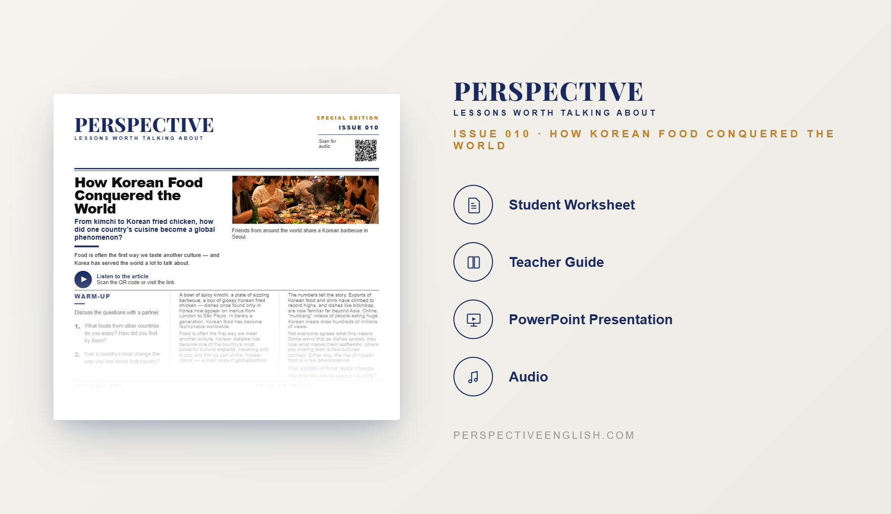

ISSUE 010
Korean Food Special
From kimchi to Korean fried chicken, how did one country’s cuisine become a global phenomenon?
A ready-to-teach English lesson exploring Korean food, its global popularity and how it has become a worldwide cultural phenomenon.
Collection 01 includes Issues 006–010.
LESSON PREVIEW

ABOUT THIS LESSON
Korean food was once enjoyed mainly in Korea, but today dishes like kimchi, bibimbap and Korean barbecue are loved by millions of people around the world.
This magazine-style English lesson explores how Korean food became a global success and encourages students to examine the cultural impact of the Korean Wave.
Students read an original article, learn useful vocabulary and discuss whether Korean food has changed the way the world eats.
FROM THE ARTICLE
WHAT'S INCLUDED
- Magazine-style student worksheet
- Original article and audio recording
- Vocabulary and reading activities
- Discussion and critical-thinking tasks
- Speaking challenge and writing prompt
- Teacher guide and complete answer key
- Classroom presentation
GET THE COMPLETE LESSON
Ready to teach Korean Food Special?
Purchase this lesson individually or save with Perspective Collection 01.
Secure checkout and instant digital delivery through Payhip.